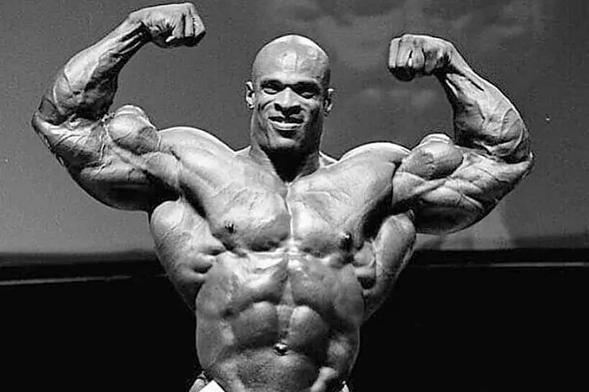
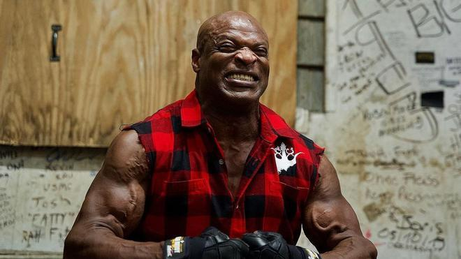
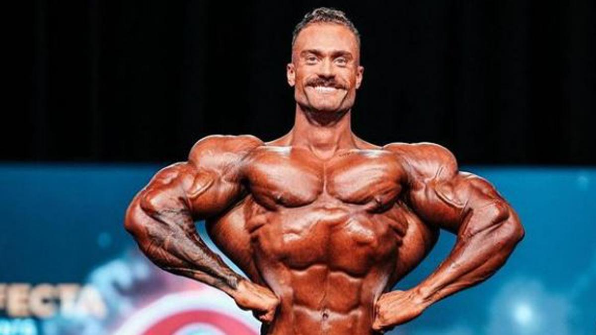
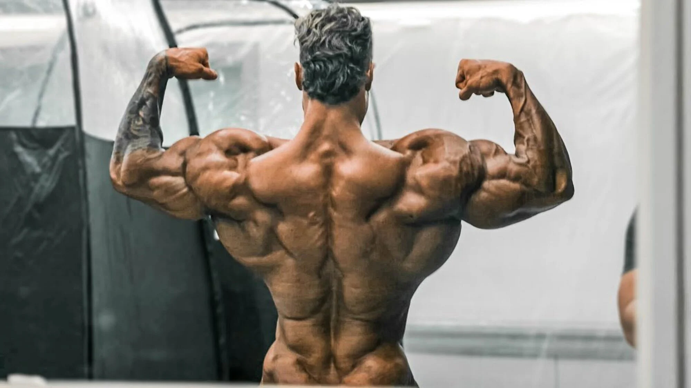
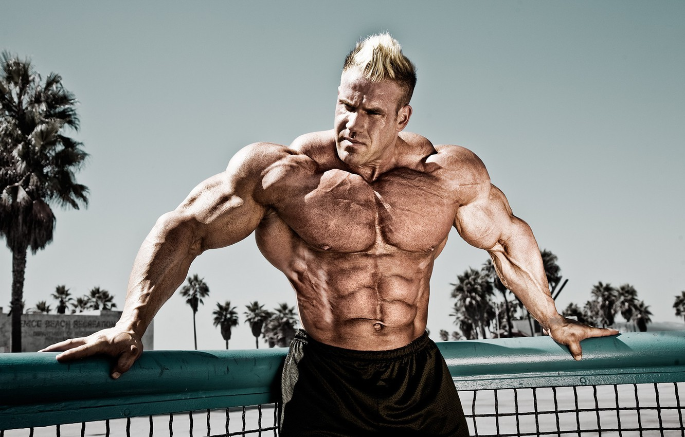
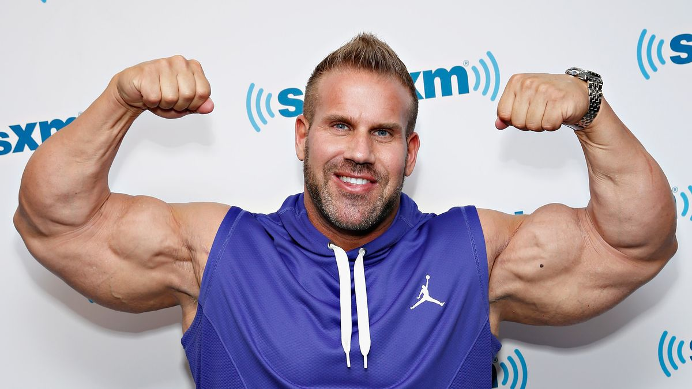

Ronny Coleman

Ronny Coleman es un exfisicoculturista profesional y ocho veces campeón de Mr. Olympia. Nació el 13 de mayo de 1964 en Bastrop, Louisiana, EE. UU. Conocido por su increíble fuerza y dedicación al deporte, Ronny Coleman se convirtió en una de las figuras más icónicas de la historia del fisicoculturismo.
Ronnie Coleman es conocido por su físico masivo y su enfoque de entrenamiento extremadamente intenso. Después de retirarse del culturismo profesional, ha experimentado problemas de salud, especialmente relacionados con sus numerosas lesiones.
Esta es su situacion actual:

Chris Bumstead

Chris Bumstead es un fisicoculturista canadiense nacido el 2 de agosto de 1994. Se ha destacado en la categoría de Classic Physique. hris Bumstead ha ganado varias competiciones importantes, incluido el título de Mr. Olympia Classic Physique en cinco ocasiones y portando actualmente el titulo.
Chris Bumstead ha sido elogiado por su estructura física clásica, reminiscente de los culturistas de la era dorada del culturismo en la década de 1970.
Su estado fisico actualmente es este:

Jay Cutler

Jay Cutler es un exfisicoculturista profesional estadounidense, nacido el 3 de agosto de 1973 en Sterling, Massachusetts, EE. UU.Conocido como "The Gift", Jay Cutler ganó el prestigioso título de Mr. Olympia cuatro veces durante su carrera y es considerado uno de los mejores fisicoculturistas de su época. Coincidio en la historia del culturismo con Ronny Coleman, produciendose una de las mejores rivalidades de la historia.
Después de retirarse del culturismo competitivo, Jay Cutler ha estado involucrado en diversas empresas relacionadas con el fitness y la nutrición. También ha sido comentarista de eventos de culturismo y ha ofrecido seminarios y apariciones públicas relacionadas con el mundo del fitness.
Su estado fisico actual es este:
